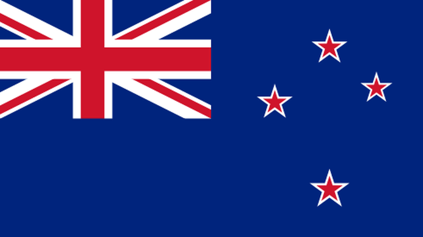

- The current New Zeland flag is blue in colorings in its upper left corner the "Union Flag" of great britain, which combines the crossings of the standards of england, scotland and northem ireland, in addition, it has four red stars with white edges that represent the southerm crogs.
- New Zeland's population is 5.123 million (2021)
- The New Zeland dollar whicth is equivalent to BRL 3.27
- The capital of new zealand is Wellington
- Major cities: Wellington, Aulckland, Christchurch, Queenstowh
- Touriste points: Sky Tower, Hobbiton Movie Set, Auckland War Memorial Museum
- Ben Barrington is a New Zealand actor, best known for roles in The Chronicles of Narnia: The Lion, the Witch and the Wardrobe, Top of the Lake and The Almighty Johnsons.
- Zoë E. Bell is a New Zealand stuntwoman and actress. Bell was a stunt double for actresses Lucy Lawless in Xena: Warrior Princess and Uma Thurman in Kill Bill, in addition to acting in other films.
- Culture Maori
- Pies and Cakes
- Flag color (Blue and Red)
- New Zeland's culture is unique: It's perfect blend of respect for traditions and economic development. With Maori,European and asian people living in harmony, this is an excellent destination for those who wish to de an exchange progam.
- Typical foods in New Zeland are: Fried foods (potatos and breaded meat) and savory pies and sweet pies.
- A lollipop cake or lollipop log is a new Zealand cake or confection that features "lollipops" as a man engredient. The exact origins of this cake are unknowh.
- New Zeland don't care much about how they look or what other people think. in the first place, the people of New Zeland do not care about impressing, they buy good and quality clothes,yes, but they are not connected to brands or fashion slaves, each one wears whathe wants.